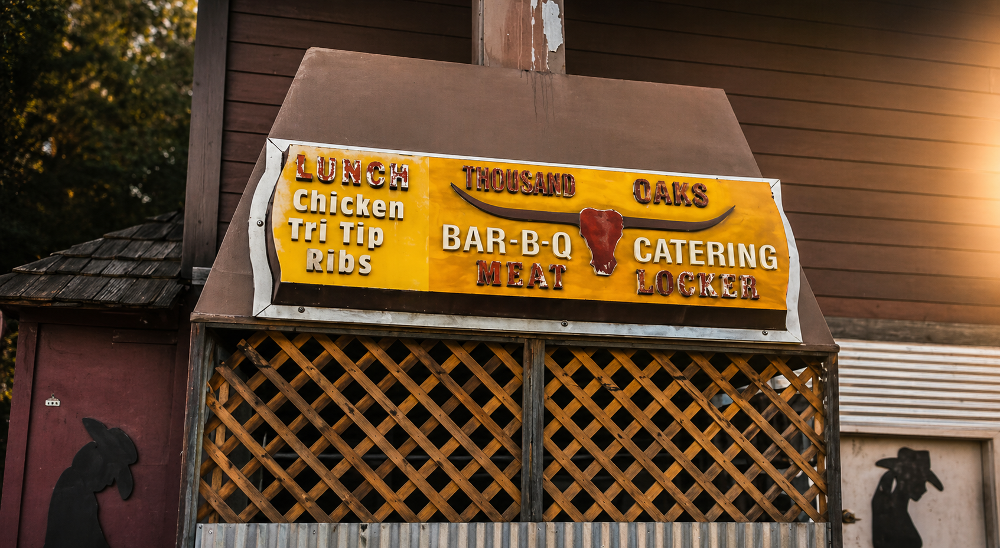

Signature Cut
Tri-Tip
Santa Maria–style Tri-Tip, seasoned and grilled fresh out front every day. Served sliced or in a sandwich.
T.O. Meat Locker • Est. 1957
Fresh-grilled Tri-Tip, Chicken & Ribs — cooked right in front of you every day.
Thousand Oaks Meat Locker is the Conejo Valley's original barbecue joint, family-owned and serving Thousand Oaks since 1957. Every day we fire up the grill out front and cook fresh — hand-trimmed tri-tip, fall-off-the-bone ribs, and slow-grilled chicken, the same way we have for generations. What started as a neighborhood meat locker has grown into a beloved local BBQ institution, but the recipe hasn't changed: real wood-fired flavor, generous portions, and none of the fuss.
The Classics
Tri-Tip
Our signature cut. Santa Maria–style tri-tip, hand-trimmed and grilled fresh out front every day, served sliced or piled high on a sandwich.
Ribs
Fall-off-the-bone pork and beef ribs, slow-cooked low and finished on the grill with our house seasoning — a Thousand Oaks favorite since the 70s.
Chicken
Whole chicken halves cooked over open flame until juicy inside and char-kissed outside, including our Cajun-style Uncle Bum's chicken.
The Classic BBQ Sandwich
Thick-cut meat piled onto a fresh roll with our signature sauces — the order regulars have been coming back for since 1957.
Our History
Thousand Oaks Meat Locker started as a family-owned custom butcher shop on Thousand Oaks Blvd in 1957. As the Conejo Valley grew and tastes changed, the Meat Locker transformed into a full BBQ restaurant, grilling fresh Tri-Tip, Chicken, and Ribs out front since the mid-1970s. Same family, same location, same fire — nearly 70 years later, we're still Thousand Oaks' original BBQ joint.
Read Our Full StoryCome See Us
You'll find us at 2684 E Thousand Oaks Blvd, right on Thousand Oaks Boulevard, serving lunch and dinner to Thousand Oaks, Newbury Park, Westlake Village, and Agoura Hills. Open Mon–Wed 11am–5pm and Thu–Sun 11am–8pm.
The Classics
Cooked fresh out front every day — same recipes, same fire, since the mid 1970s.
Santa Maria–style Tri-Tip, seasoned and grilled fresh out front every day. Served sliced or in a sandwich.
Whole chicken halves over open flame — juicy inside, char-kissed outside. A 1000 Oaks staple since the 70s.
Fall-off-the-bone pork ribs, slow-cooked and finished on the grill with our house seasoning.
Mix-and-match plates — build your own combo with sides. Feeds one or the whole crew.

Our Story
Family-owned and operating since 1957 — Thousand Oaks' first and most beloved BBQ institution.
The 1000 Oaks Meat Locker started as a custom butcher shop on Thousand Oaks Blvd. As the Conejo Valley grew and tastes evolved, we transformed into what we are today: a full BBQ restaurant with celebrity status. Tri-Tip, Chicken, and Ribs cooked fresh out front, every day, since the mid 1970s.

Now on DoorDash
Get fresh BBQ delivered to your door. Same great quality — straight to you through DoorDash.
Order on DoorDashEvents & Gatherings
From family backyard parties to corporate events across the Conejo Valley — 1000 Oaks Meat Locker brings the pit to you.